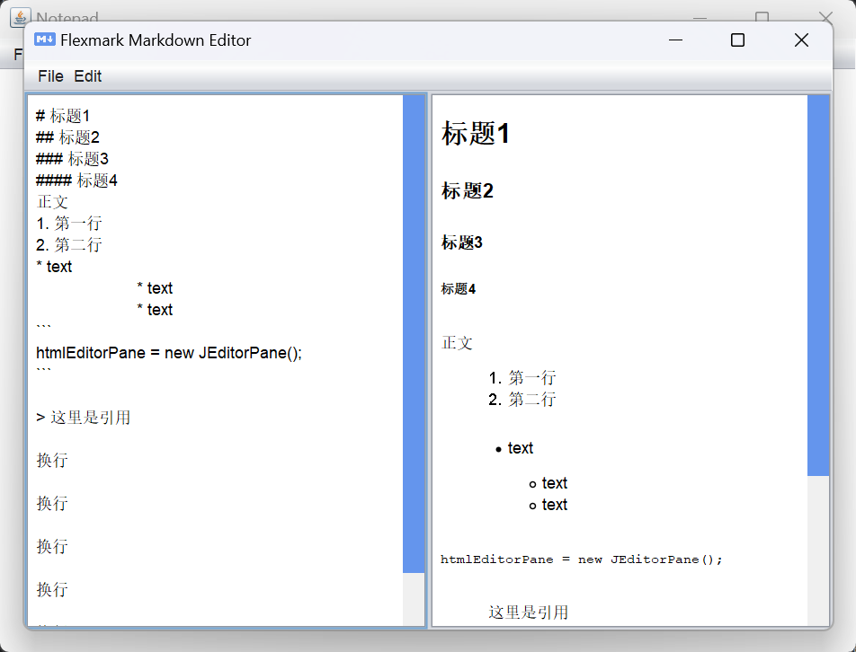

MarkDown编辑器
实现这一功能有两个关键点。第一是识别MarkDown语法，第二是创建一个新的面板显示实时渲染结果。
识别MarkDown：如果直接将MarkDown文本一行一行解释并按照java对字体字号的设置等加上样式，这样过于复杂，因为目前的简易记事本并没有那么多样式支持这个功能，而且这样按行渲染确实很麻烦。更优的策略是将MarkDown语法转换HTML超文本标记语言，然后对HTML进行渲染。
最开始的想法是自己写一个正则匹配完成所有的转换，就像这样：
private String convertMarkdownToHTML(String markdownText) { // 处理标题 markdownText = markdownText.replaceAll("^# (.+)$", "<h1>$1</h1>"); markdownText = markdownText.replaceAll("^## (.+)$", "<h2>$1</h2>"); markdownText = markdownText.replaceAll("^### (.+)$", "<h3>$1</h3>"); // 处理列表 markdownText = markdownText.replaceAll("^(\\*|\\d\\.)( .+)$", "<li>$2</li>"); markdownText = markdownText.replaceAll("^(\\*|\\d\\.) .+", "<ul>$0</ul>"); markdownText = markdownText.replaceAll("<ul>(.+?)</ul>", "$1"); // 处理链接 markdownText = markdownText.replaceAll("\\[([^\\]]+)\\]\\(([^\\)]+)\\)", "<a href=\"$2\">$1</a>"); // 处理图片 markdownText = markdownText.replaceAll("![^\\[]*\\[([^\\]]+)\\]\\(([^\\)]+)\\)", "<img alt=\"$1\" src=\"$2\">"); // 处理粗体和斜体 markdownText = markdownText.replaceAll("\\*\\*(.*?)\\*\\*", "<strong>$1</strong>"); markdownText = markdownText.replaceAll("\\*(.*?)\\*", "<em>$1</em>"); // 处理换行 markdownText = markdownText.replaceAll("\\n", "<br>"); return markdownText; }但是这样的转换很难概括全面，而且主要的是一些尚未解决的问题，比如标题只有第一则有效，后面无法识别；换行存在问题；Tab未被处理等等。鉴于本人对正则表达并不熟练，于是最终决定放弃自己编写转换器。。。
替代方案是使用成熟的Markdown库，本项目选择的是使用flexmark-java库（源码地址为 https://github.com/vsch/flexmark-java ）。不过这个库并没有jar包，其官方给出的一种导入方法是使用maven导入依赖。于是本项目不得不从一个普通的直接创建的java项目变成了一个普通的maven创建的项目。
在配置并创建好一切后，从pom.xml文件里导入依赖：
<dependency> <groupId>com.vladsch.flexmark</groupId> <artifactId>flexmark-all</artifactId> <version>0.62.2</version> </dependency>然后直接使用这个转换器将MarkDown转换为HTML：
import com.vladsch.flexmark.util.ast.Node; import com.vladsch.flexmark.parser.Parser; import com.vladsch.flexmark.html.HtmlRenderer; // real-time rendering private void scheduleUpdatePreview() { executorService.schedule(this::updatePreview, 500, TimeUnit.MILLISECONDS); } private void updatePreview() { String markdownText = markdownTextArea.getText(); String htmlText = convertMarkdownToHTML(markdownText); SwingUtilities.invokeLater(() -> htmlEditorPane.setText(htmlText)); } // convert to html private String convertMarkdownToHTML(String markdownText) { Parser parser = Parser.builder().build(); Node document = parser.parse(markdownText); HtmlRenderer renderer = HtmlRenderer.builder().build(); return renderer.render(document); }
创建新面板：设计思路很简单，就是新开一个分为两栏的窗口，左侧是MarkDown文本的输入框，右侧则显示实时渲染，两侧都是JScrollerPane类。此外为了样式更换了左上角的图标与滚轮颜色。
JScrollPane markdownScrollPane = new JScrollPane(markdownTextArea); markdownScrollPane.setPreferredSize(new Dimension(300, 400)); // Set a custom ScrollBarUI for vertical scroll bar markdownScrollPane.getVerticalScrollBar().setUI(new CustomScrollBarUI()); add(markdownScrollPane, BorderLayout.WEST); htmlEditorPane = new JEditorPane(); htmlEditorPane.setContentType("text/html"); htmlEditorPane.setEditable(false); JScrollPane htmlScrollPane = new JScrollPane(htmlEditorPane); htmlScrollPane.setPreferredSize(new Dimension(300, 400)); // Set a custom ScrollBarUI for vertical scroll bar htmlScrollPane.getVerticalScrollBar().setUI(new CustomScrollBarUI()); add(htmlScrollPane, BorderLayout.EAST); pack(); setLocationRelativeTo(null); executorService = Executors.newSingleThreadScheduledExecutor(); // Set a custom icon for the JFrame ImageIcon customIcon = new ImageIcon("pic/markdownicon.png"); setIconImage(customIcon.getImage());其他设置诸如菜单栏功能可以仿照主面板，比如保存、打开等操作，唯一不同的点在于需要设置退出面板框不等于退出整个程序（顺带一提，此处的撤销与重做功能可用）。退出功能修改如下：
addWindowListener(new WindowAdapter() { @Override public void windowClosing(WindowEvent e) { onClose(); } });
最终效果如下：
编辑器使用示例 